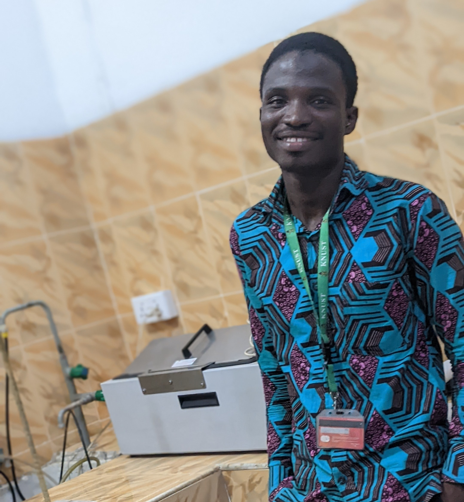
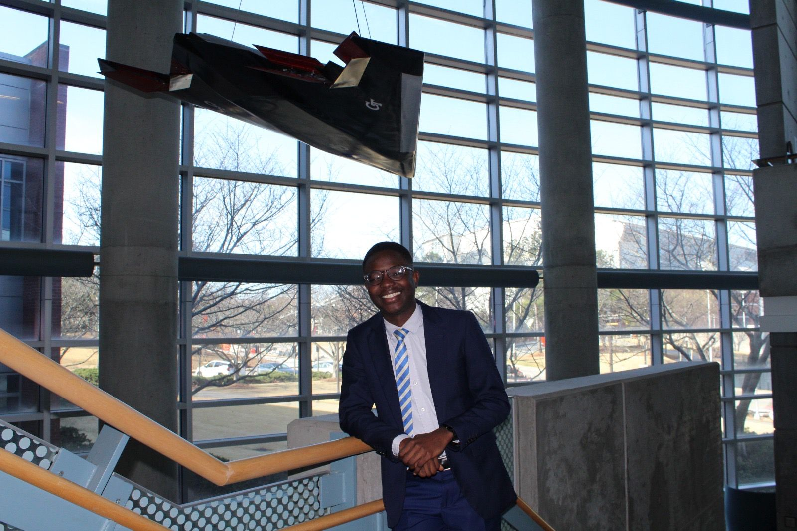

Issakah Obed, BSc
Researcher
AI/ML for composite design, large language models for materials discovery, computational chemistry, organic electronics and electrocatalysis.
People
PIRC connects researchers working across polymer engineering, sustainable materials, computational science, artificial intelligence, energy materials and advanced manufacturing.
Researchers
Our members bring complementary expertise from materials science, computation, manufacturing and sustainability.
Researcher
AI/ML for composite design, large language models for materials discovery, computational chemistry, organic electronics and electrocatalysis.

Researcher
Advanced manufacturing of sustainable composites, biobased materials and sustainable development.
Researcher
Renewable materials, sustainable development, circular economy, life-cycle assessment, biobased materials and biotechnology.
Researcher
Computational materials engineering, mechanical behavior of materials, and sustainable and smart materials.
Researcher
Computational materials, smart sensors, IoT and AI, biomaterials, molecular dynamics, multiscale simulation, characterization and product development.
Researcher
All-solid-state batteries, conductive polymer electrolytes, and polymer-based thermoelectric materials and cooling devices.

Researcher
Organic semiconductor phase tuning, energy conversion and energy storage.